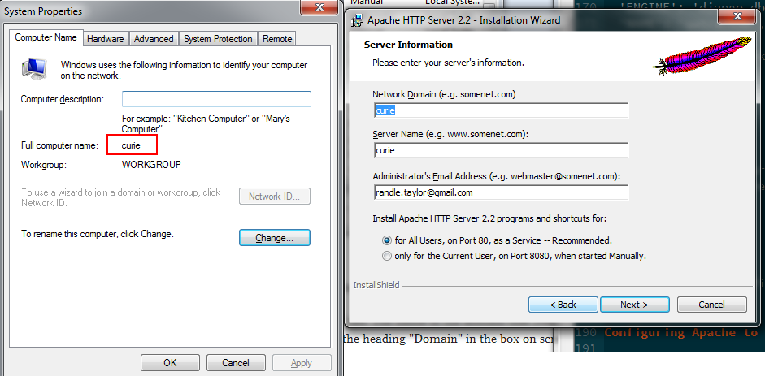

Deploying QATrack+ with Windows, Apache & PostgreSQL¶
Note this guide is still in progress¶
This guide is going to walk you through installing QATrack+ on a Windows Desktop with the Apache Webserver and PostgreSQL database.
- Installing and configuring git
- Checkout the latest release of the QATrack+ source code from bitbucket.
- Setting up our Python environment (including virtualenv)
- Making sure everything is working up to this point
- Setting up a database with PostgreSQL & pgAdmin
- Configuring Apache & mod_wsgi
- Wrap up
1. Installing git¶
Go to http://git-scm.com and download the latest version of git (msysgit) for Windows (Git-1.8.1.2-preview20130201 at the time of writing). Run the installer. I just leave all the settings on their defaults but you are free to modify them if you like.
Step 1 done ;)
2. Checkout the latest release of QATrack+ source code from bitbucket¶
From the Start Menu look for the Git folder under All Programs and select Git Bash. This will open up a console window which we will be using fairly heavily for the rest of the process. (Note: this is a fairly full featured bash shell and is a lot more powerful than the default windows command prompt).
To create a home for QATrack+ and check out the source code, use the following commands:
#!bash
mkdir /c/deploy
cd /c/deploy
git clone https://bitbucket.org/tohccmedphys/qatrackplus.git
3. Setting up our Python environment¶
Note all Python packages should be 32 bit versions even on 64 bit machines
Go to http://www.python.org/download/ and download the 32 bit Python 2.7.X Windows Installer for Python (current version is 2.7.3 at the time of writing – QATrack+ does not currently support Python3). Go through the installer using the default options (Install for all users).
Next go to http://pypi.python.org/pypi/setuptools#files and download and run the MS Windows Installer (setuptools-0.6c11.win32-py2.7.exe at the time of writing)
We now need to download Scipy, matplotlib and pywin32. Go to http://sourceforge.net/projects/scipy/files/scipy/0.11.0/ and download the win32 superpack (eg scipy-0.11.0-win32-superpack-python27.exe. Save it in C::raw-latex:`\deploy` or somewhere else you can remember. Likewise, visit http://matplotlib.org/downloads.html and download the latest 32 bit version of matplotlib for Windows (matplotlib-1.2.0.win32-py2.7.exe at the time of writing). Visit http://sourceforge.net/projects/pywin32/files/pywin32/Build%20218/ and download pywin32-218.win32-py2.7.exe. Finally visit http://www.stickpeople.com/projects/python/win-psycopg and download psycopg2-2.5.2.win32-py2.7-pg9.2.6-release.exe.
You will also want to add Python to your PATH environment variable. The process is slightly different depending on if you are on XP or something newer but the gist of it is: * Right click on My Computer * Select Advanced (or Advanced System Settings) * Select Environment Variables * Select Path under the System variables section and then click edit * Append ;C::raw-latex:`\Python`27;C::raw-latex:`Python`27:raw-latex:`Scripts `to the end of the path. Don’t overwrite the existing value! * Click Ok/Ok/Ok
Close the git bash command prompt you had open before and then open a new one (this will give you access to the updated PATH variable).
In your new git bash window the command which python should return
/c/Python27/python. If it doesn’t then your PATH variable has not
been set correctly.
We’re now ready to install all the libraries QATrack+ depends on. To install them, run the following:
#!bash
cd /c/deploy
easy_install pip
pip install virtualenv==1.9
mkdir venvs
virtualenv venvs/qatrack
source venvs/qatrack/Scripts/activate
easy_install numpy==1.7
easy_install /c/deploy/scipy-0.11.0-win32-superpack-python2.7.exe
easy_install /c/deploy/matplotlib-1.2.0.win32-py2.7.exe
easy_install /c/deploy/pywin32-218.win32-py2.7.exe
easy_install /c/deploy/psycopg2-2.5.2.win32-py2.7-pg9.2.6-release.exe
cd qatrackplus
pip install -r requirements/base.txt
pip install -r requirements/optional.txt
pip install -r requirements/win.txt
4. Checking everything is functional so far¶
Getting everything installed was a pain, so lets take a minute and check everything is now functioning as it should: create a directory called ‘db’ in the main qatrackplus directory and then setup a temporary database for testing (answer ‘yes’ and create a super user when prompted).
#!bash
cd /c/deploy/qatrackplus
mkdir db
python manage.py syncdb
python manage.py migrate
python manage.py loaddata fixtures/defaults/*/*
python manage.py collectstatic
You should now be able to run the built in test server and access your QATrack+ site for the first time! At the command prompt type the following to start the server:
#!bash
python manage.py runserver
You should then be able to open a browser window and visit http://127.0.0.1:8000 where you will be redirected to a login page (you can login using the superuser you created earlier).
In the terminal hit Ctrl+C to kill the server.
5. Creating a database with PostgresSQL¶
Visit the EDB download page and download the Postgres 9.x.x installer for your version of Windows (i.e. x86-32 or x86-64).
Run the installer, accepting the default options.
From the start menu find and open pgAdminIII (under the PostgreSQL folder).
In the Object Browser frame, right click the PostgreSQL 9.X server, click ‘Connect’, and enter the password you used when you set up PostgreSQL.
Connect to PostgreSQL server
Right click on the Login Roles item and select
New Login Role....
New Login Role
In the Properties tab enter qatrack for the Role name and then click
the Definition tab and enter a password (e.g. qatrackpass). On the
Role Privleges enable the Can create databases option and then click
OK.
QATrack login role
Next right click on the Databases item and select New Database....
Creating a new db
Enter qatrackdb as the Name and select qatrack as the Owner then
click OK.
Creating QATrack db
Configuring QATrack+ to use your new database¶
Create a file called local_settings.py in /c/deploy/qatrackplus/qatrack/ and add the following contents:
#!python
DEBUG = False
TEMPLATE_DEBUG = False
DATABASES = {
'default': {
'ENGINE': 'django.db.backends.postgresql_psycopg2', # Add 'postgresql_psycopg2', 'mysql', 'sqlite3' or 'oracle'.
'NAME': 'qatrackdb', # Or path to database file if using sqlite3.
'USER': 'qatrack', # Not used with sqlite3.
'PASSWORD': 'qatrackpass', # Not used with sqlite3.
'HOST': '', # Set to empty string for localhost. Not used with sqlite3.
'PORT': '', # Set to empty string for default. Not used with sqlite3.
}
}
Once again, we will configure our new PostgreSQL database from the command prompt (answer ‘yes’ and create a super user when prompted):
#!bash
python manage.py syncdb
python manage.py migrate
python manage.py loaddata fixtures/defaults/*/*
6. Configuring Apache to Serve QATrack+¶
Django’s built in web server that we used earlier is not meant to be used in production. Instead we will be using Apache2 & mod_wsgi to serve QATrack+. Visit an Apache download mirror site (e.g. http://apache.marz.ca//httpd/binaries/win32/) and download and run httpd-2.2.25-win32-x86-openssl-0.9.XX.msi.
Enter your computers network domain name (or computer name as shown in the screenshot below).  and then complete the installer with the default values.
You should now be able to visit http://localhost/ or http://yourcomputername/ and see an “It works!” page.
Apache “it works” page
Next we need to install mod_wsgi for Apache. Visit
http://www.lfd.uci.edu/~gohlke/pythonlibs/#mod_wsgi and download
mod_wsgi-3.4.ap22.win32-py2.7.zip. Unzip the file and copy
mod_wsgi.so to the modules directory of your Apache installation
(e.g. C::raw-latex:`\Program `Files (x86):raw-latex:`Apache Software
Foundation:raw-latex:Apache`2.2:raw-latex:modules `or
C::raw-latex:Program Files:raw-latex:Apache Software
Foundation:raw-latex:Apache`22:raw-latex:modules)[1].
In the folder Apache Software Foundation:raw-latex:Apache`2.2:raw-latex:conf `there is a file called httpd.conf. Open that file in a text editor and look for the section of LoadModule` statements and add the following line:
LoadModule wsgi_module modules/mod_wsgi.so
now go to the bottom of the file and enter the line
Include "c:/deploy/qatrackplus/apache/apache_django_wsgi.conf"
Now create a new folder called apache in the
C:\deploy\qatrackplus\ folder. In that folder you will create the
following two files:
- Create a file called django.wsgi
(
C:\deploy\qatrackplus\apache\django.wsgi) and put the following contents in it:
#!python
import os, sys
sys.path.append('c:/deploy/qatrackplus')
sys.path.append('c:/deploy/qatrackplus/qatrack')
os.environ['DJANGO_SETTINGS_MODULE'] = 'qatrack.settings'
# Activate your virtual env
activate_env="c:/deploy/venvs/qatrack/Scripts/activate_this.py"
execfile(activate_env, dict(__file__=activate_env))
import django.core.handlers.wsgi
application = django.core.handlers.wsgi.WSGIHandler()
- Create a file called apache_django_wsgi.conf
(
C:\deploy\qatrackplus\apache\apache_django_wsgi.conf) with the following content:
Alias /static "C:/deploy/qatrackplus/qatrack/static"
<Directory C:/deploy/qatrackplus/qatrack/static>
Order allow,deny
Allow from all
</Directory>
Alias /media "C:/deploy/qatrackplus/qatrack/media"
<Directory C:/deploy/qatrackplus/qatrack/media>
Order allow,deny
Allow from all
</Directory>
WSGIApplicationGroup %{GLOBAL}
WSGIScriptAlias /qatrack "c:/deploy/qatrackplus/apache/django.wsgi"
<Directory "c:/deploy/qatrackplus/apache">
Allow from all
</Directory>
<VirtualHost *:80>
DocumentRoot c:/deploy/qatrackplus
ServerName 127.0.0.1
</VirtualHost>
Add the following three lines to the bottom of the local_settings.py
file you created earlier:
#!python
FORCE_SCRIPT_NAME="/qatrack"
LOGIN_REDIRECT_URL = "/qatrack/qa/unit/"
LOGIN_URL = "/qatrack/accounts/login/"
Now restart the Apache server (Start->All Programs->Apache HTTP Server->Control Apache Server->Restart)
You should now be able to visit http://yourcomputername/qatrack/ and login to QATrack+ using the superuser name and password you created earlier!
8. Wrap Up¶
This guide has shown you one method of deploying QATrack+ on Windows using free and/or open source.software! If you’re stuck with a Windows stack it will likely work for you! Hit me up on the QATrack+ Google Group if you want to discuss some other alternatives for deploying on Windows.
References: